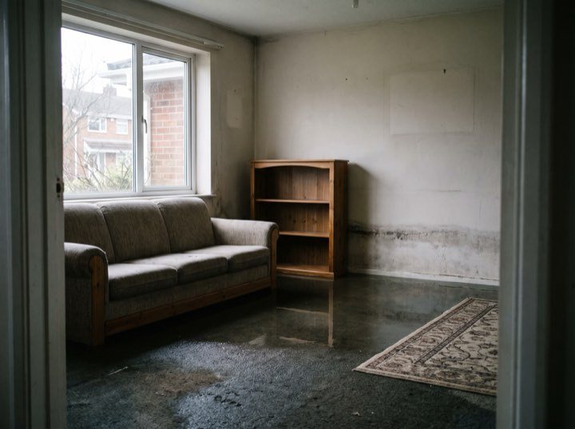
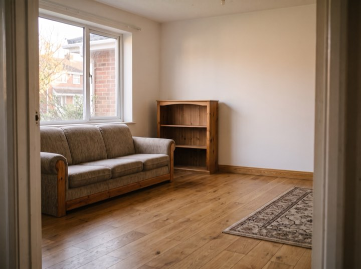
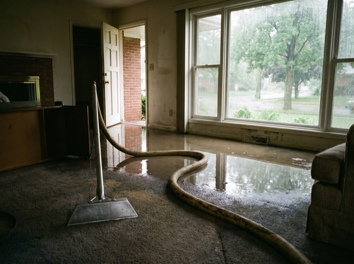
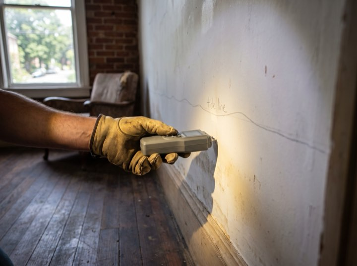
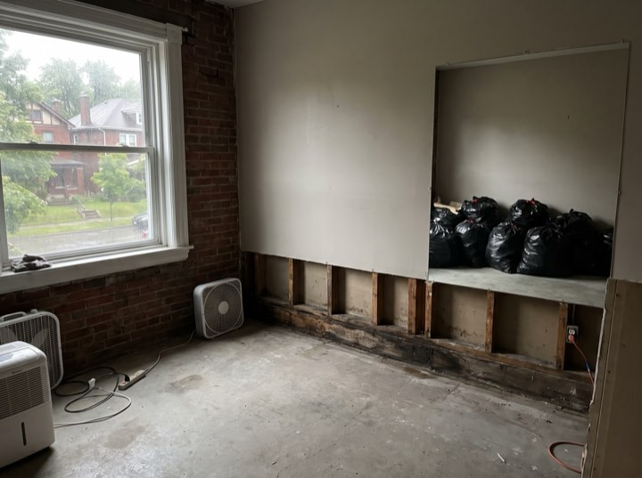

Water · Fire · Mould · 24/7
Emergency water, fire and mould restoration, billed direct to your carrier. You pay your deductible and nothing else: no float, no reimbursement paperwork, no waiting on a cheque to pay us.
Services
Every hour water sits, the damage and the cost compound. This is why we answer at 3am.
Truck-mounted extraction, commercial air movers and moisture mapping so we can prove the structure is genuinely dry, not just dry-feeling.
Soot removal, odour neutralisation and contents cleaning. Smoke damage travels far further than the fire itself.
Containment, HEPA filtration and post-remediation verification by an independent hygienist so the clearance means something.
Board-up, tarping and full structural drying. We mobilise extra crews before a forecast storm rather than after it.
Results
Process
You are dealing with a flooded house and an insurance company on the same morning. We will take the second one off your hands.
A person answers. We dispatch immediately and give you an arrival window measured in minutes.
Stop the source, extract standing water, tarp or board up. The first hours decide the size of the claim.
A full photographic scope and moisture log goes to your carrier in their own format. We bill them direct, so you are never the one chasing the money.
Daily readings until verified dry, then reconstruction. You get the log, so nothing is disputed months later.
Documented for the claim
The extraction, the readings and the rebuild, each dated and filed with the claim. Your deductible is the only invoice you see.





Do not wait for business hours. Every hour standing water sits, the cost and the damage climb. Crews are on call this minute.
We work with all major insurers and bill direct. Free emergency assessment.